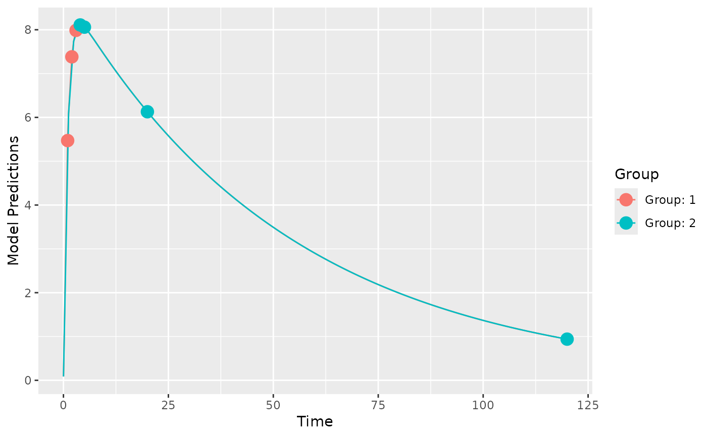

optimize HOW MANY n there should be to achieve efficiency=1 compared to a reference OFV
Arguments
- poped.db
A PopED database.
- ofv_ref
A reference OFV value to compare to.
- norm_group_fim
The FIM per individual in each design group. If
NULL, then these are computed.- ...
Arguments passed to
evaluate.fimandefficiency.
Examples
# 2 design groups with either early or late samples
poped.db <- create.poped.database(ff_fun=ff.PK.1.comp.oral.sd.CL,
fg_fun=function(x,a,bpop,b,bocc){
parameters=c(CL=bpop[1]*exp(b[1]),
V=bpop[2]*exp(b[2]),
KA=bpop[3]*exp(b[3]),
Favail=bpop[4],
DOSE=a[1])
return(parameters)
},
fError_fun=feps.add.prop,
bpop=c(CL=0.15, V=8, KA=1.0, Favail=1),
notfixed_bpop=c(1,1,1,0),
d=c(CL=0.07, V=0.02, KA=0.6),
sigma=c(0.01,0.25),
xt=list(c(1,2,3),c(4,5,20,120)),
groupsize=50,
minxt=0.01,
maxxt=120,
a=70,
mina=0.01,
maxa=100)
plot_model_prediction(poped.db)

evaluate_design(poped.db)
#> $ofv
#> [1] 57.34239
#>
#> $fim
#> CL V KA d_CL d_V d_KA
#> CL 20100.83363 100.60318 57.19595 0.0000000 0.0000 0.0000000
#> V 100.60318 47.77375 -18.43690 0.0000000 0.0000 0.0000000
#> KA 57.19595 -18.43690 80.55401 0.0000000 0.0000 0.0000000
#> d_CL 0.00000 0.00000 0.00000 2019.7601648 73.4525 0.6961553
#> d_V 0.00000 0.00000 0.00000 73.4524996 48705.8108 117.2176533
#> d_KA 0.00000 0.00000 0.00000 0.6961553 117.2177 51.8762750
#> SIGMA[1,1] 0.00000 0.00000 0.00000 1428.9648684 31892.5113 417.9515723
#> SIGMA[2,2] 0.00000 0.00000 0.00000 274.2990996 640.9862 10.3145690
#> SIGMA[1,1] SIGMA[2,2]
#> CL 0.0000 0.00000
#> V 0.0000 0.00000
#> KA 0.0000 0.00000
#> d_CL 1428.9649 274.29910
#> d_V 31892.5113 640.98623
#> d_KA 417.9516 10.31457
#> SIGMA[1,1] 353788.5599 6967.23365
#> SIGMA[2,2] 6967.2337 236.40519
#>
#> $rse
#> CL V KA d_CL d_V d_KA SIGMA[1,1]
#> 4.742175 1.908239 11.706099 38.149149 23.388391 23.297863 28.859652
#> SIGMA[2,2]
#> 48.150485
#>
# what are the optimal proportions of
# individuals in the two groups in the study?
(n_opt <- optimize_groupsize(poped.db))
#> Initial proportions:
#> 0.5 0.5
#>
#> initial value -57.342391
#> final value -57.747204
#> converged
#>
#> Optimized proportions:
#> 0.2984998 0.7015002
#>
#> Optimized number of individuals per group
#> OFV: 57.74718
#> 30 70
#>
#> $initial_props
#> [1] 0.5 0.5
#>
#> $initial_ofv
#> [1] 57.34239
#>
#> $opt_props
#> [1] 0.2984998 0.7015002
#>
#> $opt_ofv_with_props
#> [1] 57.7472
#>
#> $opt_n_per_group
#> [1] 30 70
#>
#> $opt_ofv_with_n
#> [1] 57.74718
#>
# How many individuals in the original design are needed to achieve an
# efficiency of 1 compared to the optimized design with n=100?
optimize_n_eff(poped.db,
ofv_ref=n_opt$opt_ofv_with_n)
#> [1] 105.19